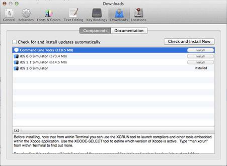

上一章我们了解了什么是Git和Git的历史，下面我们研究一下Git的安装。
话说Git和Linux操作系统都是同一个作者，所以你可能会想到在Linux系统下的安装应该是最简单的。
Linux下安装
假如你使用的是Ubuntu系统，只需要打开shell界面，并输入 sudo apt-get install git-core 按下回车后输入密码，即可完成Git的安装。
Mac OS X下安装
如果你正在使用Mac做开发，有两种安装Git的方法。
一是安装homebrew，然后通过homebrew安装Git，具体方法请参考homebrew的文档：http://brew.sh/。
第二种方法更简单，也是推荐的方法，就是直接从AppStore安装Xcode，Xcode集成了Git，不过默认没有安装，你需要运行Xcode，选择菜单“Xcode”->“Preferences”，在弹出窗口中找到“Downloads”，选择“Command Line Tools”，点“Install”就可以完成安装了。
Xcode是Apple官方IDE，功能非常强大，是开发Mac和iOS App的必选装备，而且是免费的！
Windows下安装
照理说你使用Windows的可能性应该是最大的，因此本章重点教会你如何在Windows下安装Git
不同于Linux,Windows上无法通过一行命令完成安装，我们需要先把Git安装包下载下来。访问网址 http://msysgit.github.io/,下载后默认选项安装即可。
安装完成后，在开始菜单里找到“Git”->“Git Bash”，蹦出一个类似命令行窗口的东西，就说明Git安装成功！如下图：

安装完成后，还需要最后一步设置，配置一下你的身份，在命令行输入：
$ git config --global user.name "Your Name" $ git config --global user.email "email@example.com"配置完成后你还可以使用同样的命令来查看是否配置成功，只需要将最后的名字和邮箱地址去掉即可。假如显示你刚刚配置过的信息，则表示配置信息成功！